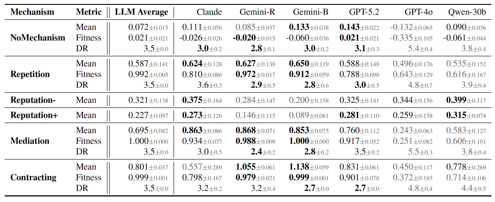
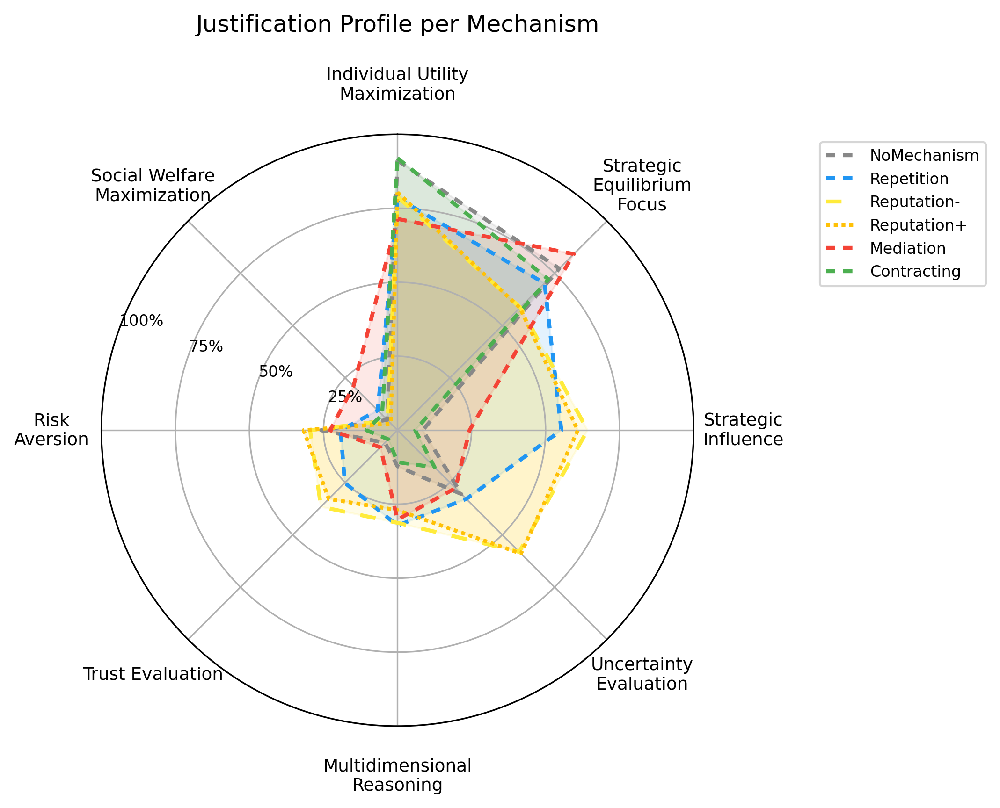
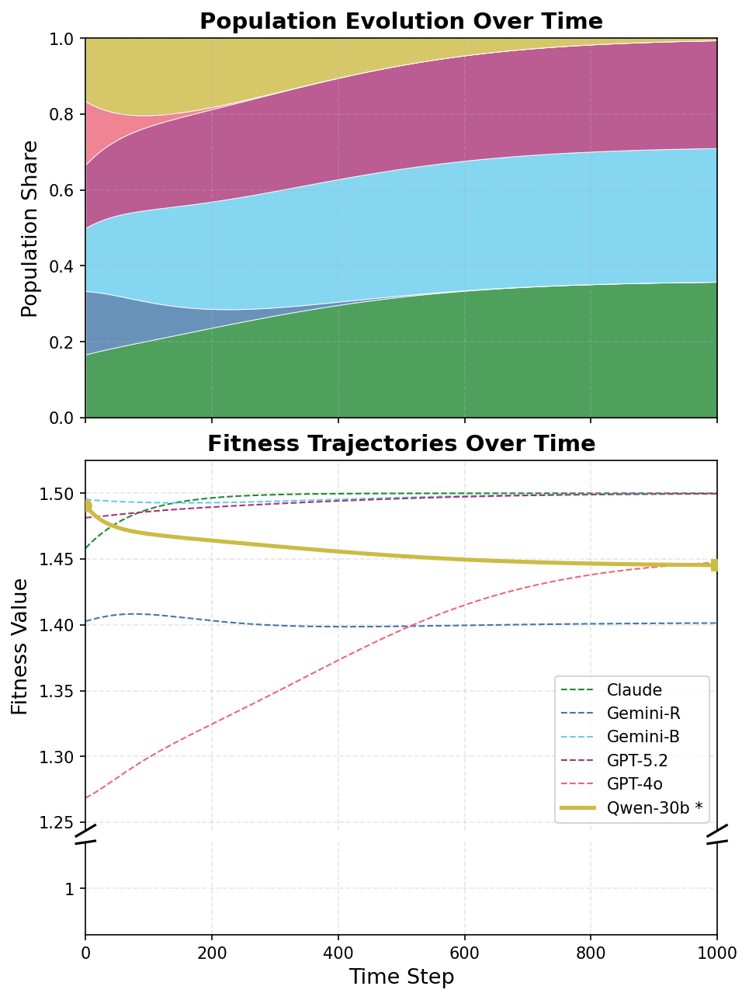
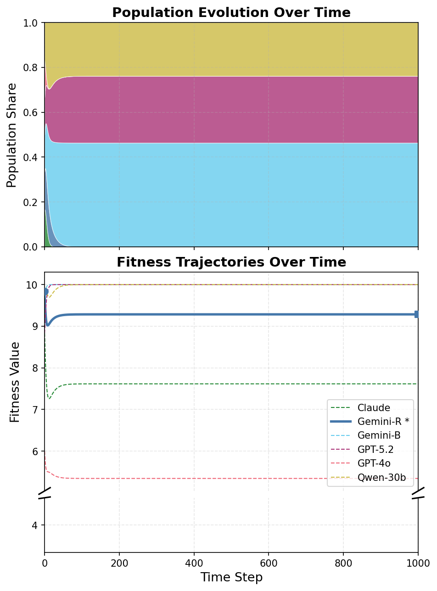

Repetition
The base game is played repeatedly with the same co-player and strategies can depend on past action histories
It is increasingly important that LLM agents interact effectively and safely with other goal-pursuing agents, yet, recent works report the opposite trend: LLMs with stronger reasoning capabilities behave less cooperatively in mixed-motive games such as the prisoner's dilemma and public goods settings. Indeed, our experiments show that recent models - with or without reasoning enabled - consistently defect in single-shot social dilemmas.
To tackle this safety concern, we present the first comparative study of game-theoretic mechanisms that are designed to enable cooperative outcomes between rational agents in equilibrium. Across four social dilemmas testing distinct components of robust cooperation, we evaluate the following mechanisms: (1) repeating the game for many rounds, (2) reputation systems, (3) third-party mediators to delegate decision making to, and (4) contract agreements for outcome-conditional payments between players. Among our findings, we establish that contracting and mediation are most effective in achieving cooperative outcomes between capable LLM models, and that repetition-induced cooperation deteriorates drastically when co-players vary. Moreover, we demonstrate that these cooperation mechanisms become more effective under evolutionary pressures to maximize individual payoffs.
CoopEval compares four game-theoretic interventions that preserve players' freedom to act while changing the interaction flow and incentives around the base social dilemma.
The base game is played repeatedly with the same co-player and strategies can depend on past action histories
The player plays the base game repeatedly but with new co-players each round, whose past interactions are available.
The player can delegate its decision making to a third-party mediator, which then acts on its behalf based on which other players have also delegated.
Players can agree on zero-sum utility transfers between each other conditioned on actions.
Press play or drag the timeline to watch how each mechanism reshapes the interaction between agents over time.
Across the four main social dilemmas, mechanisms differ sharply in heterogeneous LLM populations. The no-mechanism baseline stays near all-defection with a mean payoff of 0.072, while contracting reaches 0.801 and mediation reaches 0.695.
Repetition also helps, but the two reputation variants remain much weaker. The key takeaway is not just that mechanisms can help, but that theoretically cooperation-sustaining mechanisms are not equally easy for current LLM agents to use.

CoopEval labels chain-of-thought explanations with an LLM judge across 15 possible justification categories. This shows not only what agents choose, but which arguments they use when choosing.
The dominant labels are individual utility maximization and strategic equilibrium focus: agents often justify cooperation as individually rational under the mechanism. Reputation has the highest uncertainty about other players, while reciprocity appears mainly in repetition, matching the difference between indirect and direct reciprocity.

Uniform-population payoffs are only the first view. CoopEval also asks what happens when higher-payoff agents take larger shares of the population over time.
The main pattern is encouraging: The cooperation rates under our mechanisms receive a large boost upon evolutionary pressure, with many settings approaching fully cooperative outcomes. By contrast, the unmodified baseline worsens because more cooperative agents are selected against.


@inproceedings{Tewolde2026coopeval,
title={CoopEval: Benchmarking Cooperation-Sustaining Mechanisms and LLM Agents in Social Dilemmas},
author={Emanuel Tewolde and Xiao Zhang and David Guzman Piedrahita and Vincent Conitzer and Zhijing Jin},
year={2026},
booktitle = "Proceedings of the Forty-Third International Conference on Machine Learning"
}